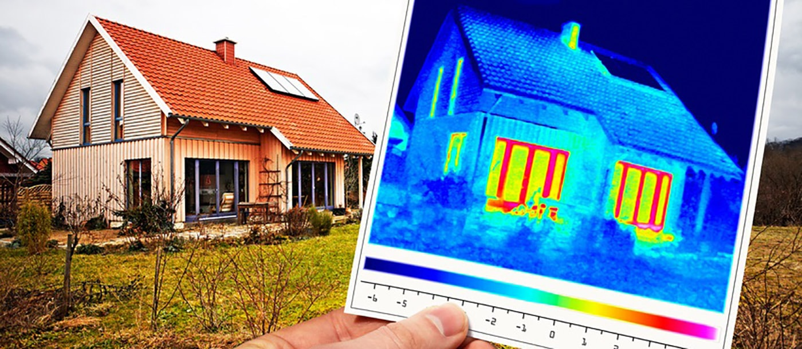

Concepts de base, transferts de chaleur, etc.
Aujourd’hui, la consommation de chauffage représente 67% de la consommation d’énergie des ménages (Ademe). La maîtrise de cette dépense énergétique est donc un enjeu social fondamental. Il s’agit également d’un enjeu environnemental fort puisque le bâtiment (résidentiel et tertiaire) représente 45% de la consommation d’énergie (Ademe).
Il existe de nombreuses façons de réduire la consommation de chauffage d’un bâtiment. Il peut s’agir de remplacer les systèmes existants par des systèmes ayant de meilleurs rendements (ex : chaudière à condensation, pompe à chaleur). Il peut s’agir également de concevoir des bâtiments laissant entrer la lumière du soleil afin de bénéficier d’apports gratuits. Il s’agit d’une solution privilégiée dans l’habitat passif. Renforcer l’isolation, des murs, du toit, des planchers ou des menuiseries, est également une solution ou encore récupérer l’énergie sur l’air extrait par la ventilation grâce à une centrale double flux.
Dans tous les cas, concevoir un bâtiment sobre énergétiquement demande de combiner l’ensemble des leviers à notre disposition.
Lorsque l’on passe l’enveloppe d’un bâtiment à la caméra thermique, on s’aperçoit que certaines parties sont plus chaudes que d’autres. Les zones les plus chaudes (en hiver) sont les zones où la chaleur s’évacue de le plus : les zones les moins bien isolées.
Ces « fuites de chaleur » sont appelées déperditions thermiques. Il s’agit d’une quantité d’énergie perdue par seconde, les déperditions s’expriment en Watt, comme une puissance.
On distingue plusieurs types de déperditions :